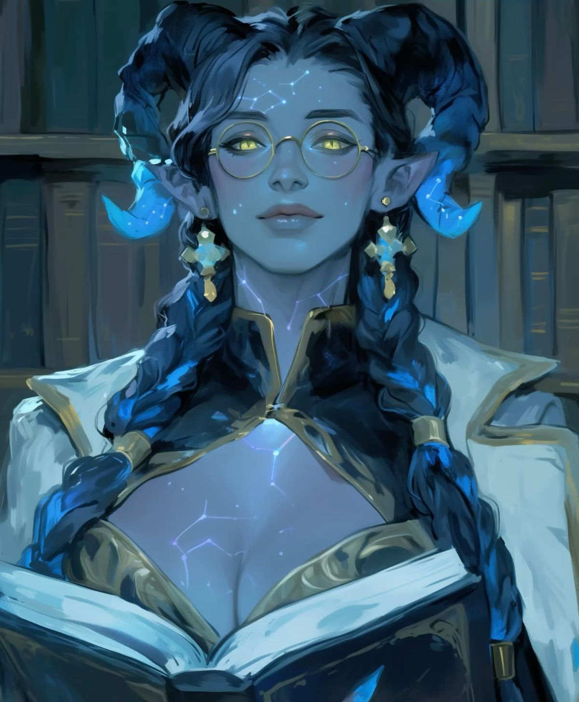
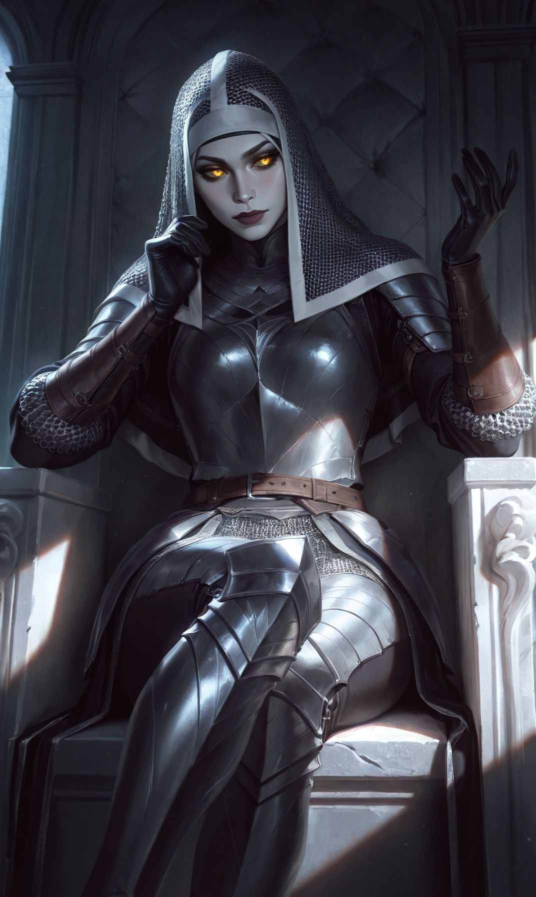
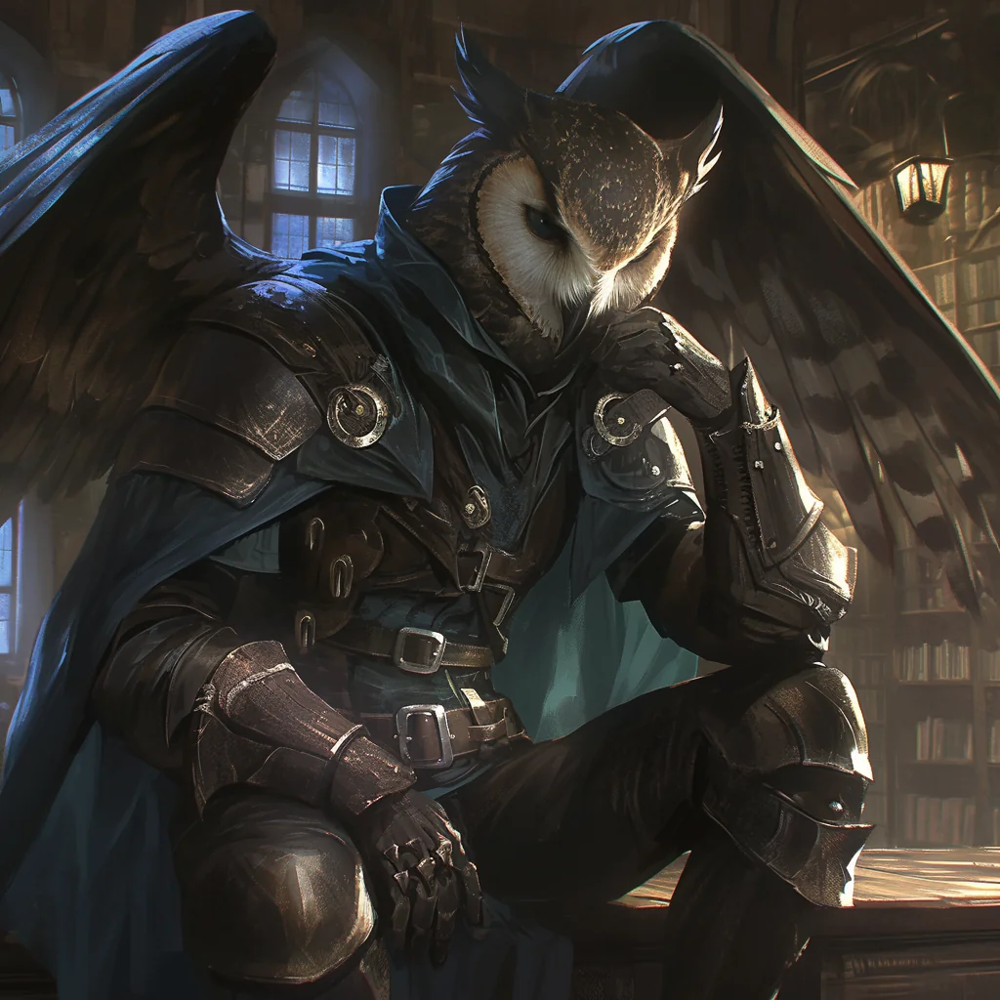
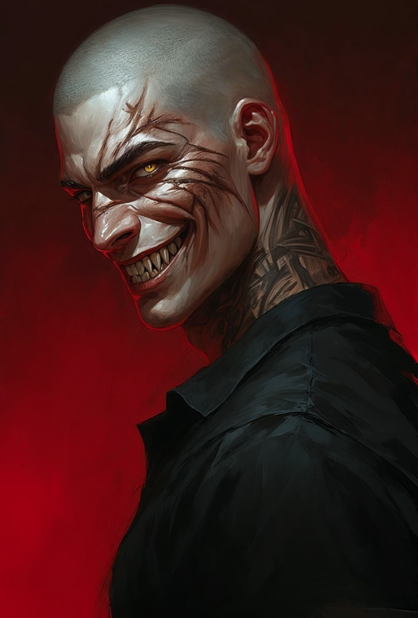
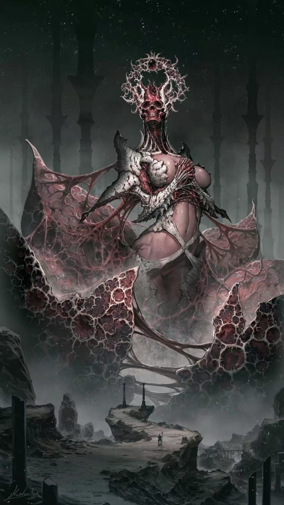

Karakter Müziği
CV-MÜZ · Campaign V
>_ Şu An Çalıyor
— Seçilmedi —
KARAKTER MÜZİĞİ
0:00
0:00
10

Çağıl Cengiz ERSER tarafından canlandırılmış ve oynanmıştır. Çağıl'ın ikinci karakteridir. Theron, kuzeyin sert vahşi doğasında; kış gecelerinin sonsuz göründüğü ve gölgelerin kötü niyetli bir amaçla dans ettiği bir coğrafyada doğdu. İlk yıllarını; babası Garrett'in kasaba demircisi, annesi Lyanna'nın ise küçük büyü yeteneklerini Engizisyon'dan gizleyen bir şifacı olduğu Frosty Passage'nin Üzerindeki Köy'de geçirdi.
Theron on altı yaşındayken (şu an 28 yaşındadır), korkunç bir tipi köyü üç hafta boyunca dış dünyaya kapattı. Bu kaosun ortasında Engizisyoncu Mordain Blackthorne, büyücü avı bahanesiyle köye baskın düzenledi. Gölge yaratıklarının saldırısı sırasında Lyanna, yaralıları kurtarmak için büyüsünü açıkça kullanınca Blackthorne tarafından heretik ilan edildi. Babası Garrett ailesini korurken öldü; Theron ise saklandığı yerden annesinin "yozlaşmaya karşı kutsanmış" gümüş bir kılıçla bizzat Blackthorne tarafından infaz edilişini izledi. Köy o gece gölgeler ve Engizisyon ateşiyle harabeye döndü.
Yıkıntılar arasından Theron'u kurtaran, 147 yaşındaki tecrübeli Half-Elf korucu Kestra oldu. Kestra, Theron'a Umbral Court hizmetkârlarının (gölge yaratıkları) aslında Engizisyon'un yarattığı korku ve umutsuzlukla beslendiğini öğretti. Theron'u, koruculuğun en tehlikeli disiplini olan Gloom Stalker yolunda eğitti. Üç yıl süren bu eğitimde Theron, karanlığı bir düşman değil, bir kalkan olarak kullanmayı öğrendi.
Ancak gölge yaratıklarıyla geçen 100 yılı aşkın mücadele Kestra'nın zihnini ve bedenini yıpratmıştı. Titreyen elleri, bitmek bilmeyen kabusları ve duyduğu fısıltılar nedeniyle Theron'u kendi karanlık sonuna sürüklememek için yanından ayırdı ve onu eski bir dostu olan Marcus'a gönderdi.
Marcus Stormwind, Engizisyon'dan firar etmiş 42 yaşında eski bir yüzbaşıydı. Geçmişte Blackthorne'un emriyle yapılan bir katliamın suçluluk duygusunu taşıyor, kurduğu gizli ağ ile büyü kullanıcılarını kaçırarak günahlarını temizlemeye çalışıyordu. Altı yıl boyunca Marcus, Theron'u askeri taktikler ve liderlik konusunda eğitti; aralarında bir baba-oğul bağı oluştu. Theron bu dönemde stresle başa çıkmak için Dragon's Ante adlı kart oyununa bağımlılık geliştirdi ve Marcus'tan stratejik öneme sahip tüm sığınak ve güvenli ev bilgilerini devraldı.
Dönüm noktası, 347 yaşındaki usta zanaatkâr Balfaren Moonwhisper'ın kurtarılması göreviyle geldi. Balfaren, can çekişirken ustalık eseri olan ve 300 yıldır doğru taşıyıcıyı bekleyen büyülü uzun yayı Theron'a teslim etti. Moonbow adı verilen bu yay, Theron'un elinde gümüş bir ışıkla parlayarak onun ruhuyla bütünleşti. Ancak bu kadim silahın varlığı, Theron'u Engizisyon'un "Yasak Eserler Listesi"ne soktu ve başına 500 altınlık bir ödül konmasına neden oldu.
En Büyük Kahramanlık Anı: Engizisyon baskını ve gölge yaratığı saldırısı altındaki bir sığınaktan; yaşlı bir büyücü kadın, bir adam ve 8 yaşındaki kızını, Moonbow'un gerçek gücünü ilk kez kullanarak sağ salim çıkarmayı başardı.
En Büyük Şehvet Anı: Wolf's Inn'deki fırtınalı bir gecede, Corvina ile olan buluşması. Göğsündeki gümüş kolye tenini dağlarken, iki yaralı ruhun birbirine teslimiyetiyle şekillenen, "huzurun yozlaşmanın ilk belirtisi olduğu" zehirli ve gerçek bir gece.
En Büyük Utanç Anı: "Aptal Tepeler" tavernasındaki bir kumar masasına dalarak korumakla görevli olduğu sığınağı ihmal etmesi. Bu hata sonucunda 16 yaşındaki Sera, Engizisyon tarafından bacağından yaralanarak yakalandı. Sera'nın kurtarılsa bile Theron'a sorduğu o soru — "Neredeydin?" — Theron'un peşini bırakmayan en büyük gölgesi oldu.









